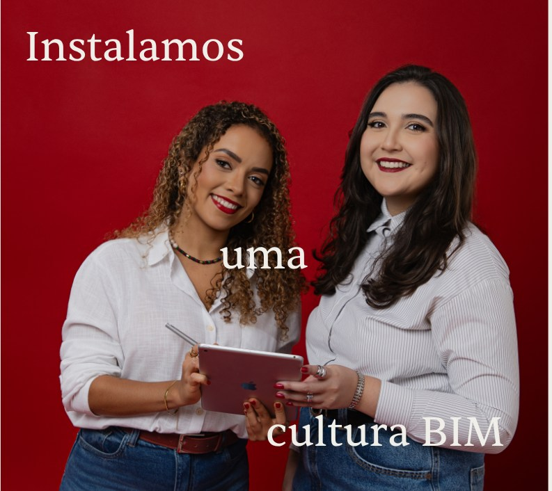
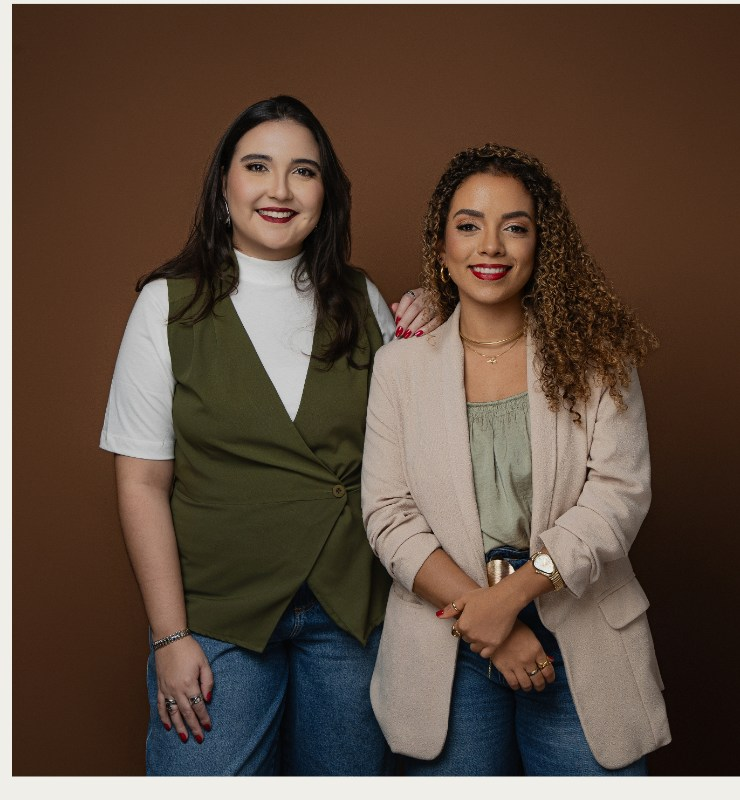
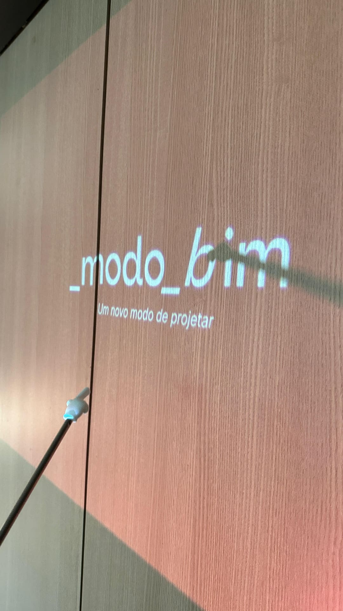
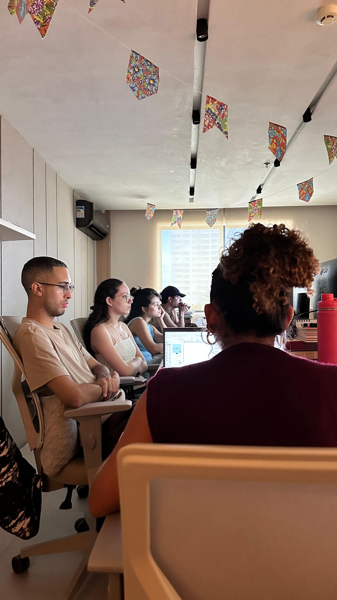
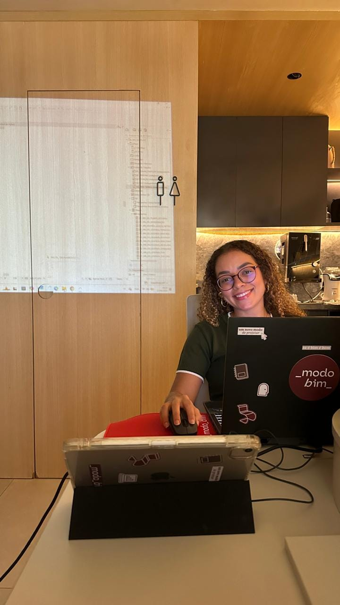
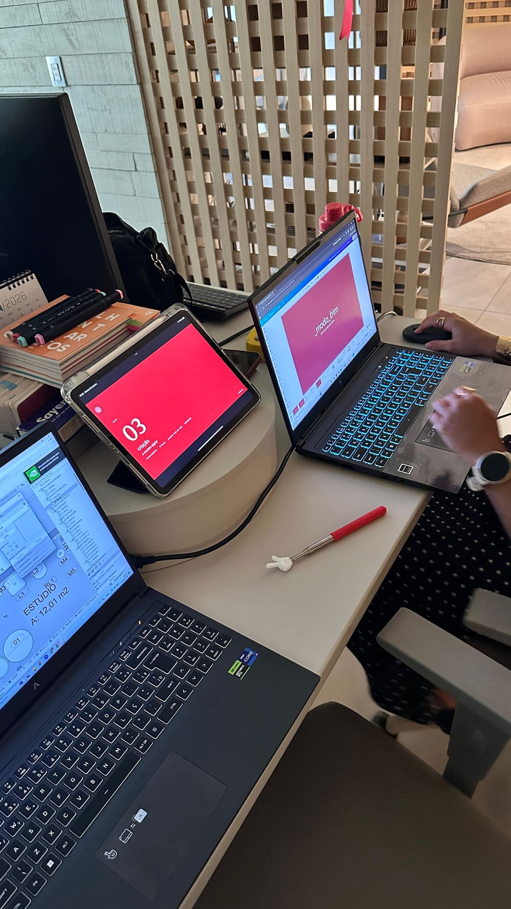
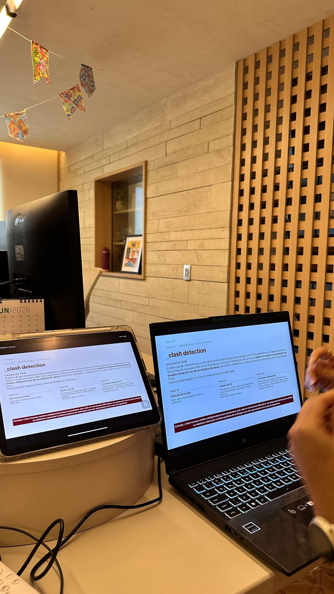

Um novo modo_
de projetar.
Somos uma consultoria de implementação BIM que estrutura processo, equipe e cultura, até seu escritório operar com autonomia real.

Seu escritório cresceu, mas os processos não acompanharam. Retrabalho, equipe sem clareza de função e uma rotina que depende demais de você.
Não entregamos software. Entregamos um modo de trabalhar.
É aí que entramos. Estruturamos o processo que faltou, damos clareza de função para cada pessoa da equipe e implementamos o BIM na ordem certa, até o escritório operar com método e parar de depender só de você. Do diagnóstico à autonomia, com acompanhamento real.
Saiba mais →Para cada momento, tem um modo_
Da implementação ao treinamento prático, cada serviço existe para um estágio diferente da sua jornada em busca da autonomia BIM.
Consultoria BIM
_Diagnóstico e direção estratégica antes de qualquer decisão.
Implementação BIM
_Jornada completa com Método BIM na Prática.
Criação de Templates
_Arquivos-base prontos para produção real.
Criação de Bibliotecas
_Objetos e showroom sob medida para sua empresa.
Coordenação BIM
_Plano de execução BIM, coordenação e compatibilização de projetos.
Treinamento BIM na Prática
_Do comando ao método: você operando BIM de verdade.
Da bagunça à autonomia, em 6 meses de parceria real.
A jornada completa de quem tem (ou está montando) um escritório e precisa que a equipe inteira opere em BIM, com método, não no improviso.
Leitura da maturidade atual e das dores reais do escritório.
Definição de processos, papéis, padrões e do template-base.
Capacitação prática da equipe na metodologia e no software.
Projeto-piloto acompanhado, com ajustes e refinamento.
Para quem está começando certo.
Para autônomos e recém-formados que querem dominar o método desde o início, no seu ritmo e no seu orçamento.
Aqui não é consultoria. São aulas e materiais diretos para você aprender a organizar seu trabalho desde já e não precisar reconstruir tudo quando o escritório crescer.
Ao final, você não "sabe usar" mais uma ferramenta. Você opera em BIM com autonomia real: produz mais rápido, com padrão profissional e com dados que saem direto do modelo. E sai preparado para o BIM que o mercado já está exigindo, nas licitações públicas e, cada vez mais, no setor privado.
Porque BIM não é software. É operação, cultura e método. E é assim que a gente entrega.

Por trás da _modo_bim
A _modo_bim é uma consultoria de implementação BIM fundada por duas arquitetas de Belém do Pará que se especializaram na metodologia, viveram a dor do mercado por dentro e decidiram ser a resposta.
Dayana Ramos traz a base metodológica sólida; Joene Louchard, a experiência em projetos reais de grande porte. Juntas, reúnem o que o mercado raramente consegue combinar: profundidade acadêmica e vivência real de mercado.
Porque BIM não é uma ferramenta a ser aprendida, é um modo de operar. Um modo de pensar o projeto, a equipe, o processo e a entrega. Por isso o nome. Por isso começamos no diagnóstico e só terminamos quando o escritório anda sozinho.
A _modo_bim acontecendo.



Muito satisfeita com os conteúdos e com o conhecimento em BIM. Através do curso foi possível ter uma melhor noção do processo projetual na prática, desde a concepção até a real execução.
Cliente Treinamento BIM na Prática
Meninas vocês arrasam, assistir as aulas de vocês me inspirou muito em colocar em prática tudo o que eu aprendi e evoluir no meu aprendizado e desenvolvimento. Sucesso!
Cliente Implementação BIM
Antes de fazer o curso, o BIM parecia uma realidade muito distante. O treinamento abriu os meus olhos para entender que, na verdade, ele é o presente e o futuro das construções. Aprendemos que BIM não se resume a softwares, mas está ligado a fluxos, processos, gestão! É o tipo de conhecimento que gostaria de ter adquirido antes.
Cliente Treinamento BIM na Prática


Qual serviço é o ideal para o seu perfil?
5 perguntas rápidas. No fim, você vê qual é o próximo passo certo pra você.